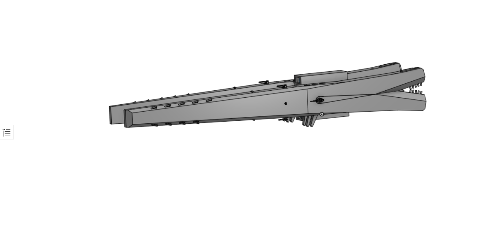

Combat interdictor ship, armed with a medium accuracy weaponized micro jump drive, six high acceleration lateral launch missile ports, four coilgun emplacements and two lateral ports for launching long range, medium acceleration missiles. Using a folding radiator panel design, this ship is able to lower its target profile when under fire.
